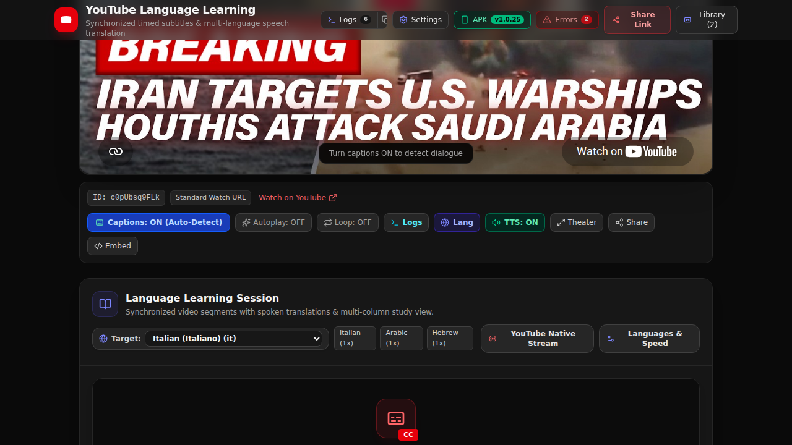

Verifies real HTTP stream interception of YouTube caption requests for video FcRzAdI8R9U without relying on static fixtures, using the native Android WebViewClient and bidirectional JS bridge.
com.ytviewer.app/.MainActivity with target video URI intent.#caption-toggle-button) to ON.WebViewClient.shouldInterceptRequest() intercepts native timedtext?v=FcRzAdI8R9U... stream.window.onNativeCaptionsInterceptedBase64(). Redux parses authentic speech dialogue.Verifies hardware TextToSpeech synchronization where audio blocks and video segments never overlap.
AndroidNativeShell.speak(text, utteranceId, rate, pitch).UtteranceProgressListener.onDone() signals completion back to WebView.Verifies target language translation by taking the original observed timedtext URL from video FcRzAdI8R9U and replacing the tlang query parameter (e.g. tlang=es or tlang=it).
es)./api/youtube-timedtext-translate with original observed URL.https://www.youtube.com/api/timedtext?v=FcRzAdI8R9U&...&tlang=es&fmt=srtVerifies Phase 1 & 2 guardrails protecting Android WebView from memory leaks, infinite dispatch loops, and ANR crashes.

adb shell screencap -p /sdcard/screen.png